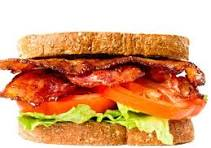

Big A' Bacon Lettuce Tomato Sandwich
This refreshing summer salad is prepared in under 10 minutes and works well as an appetizer or as a side to a protein dish!
Serves 1
Ingredients
- 1 heirloom tomato
- 2 slices bread of choice (sourdough recommended)
- 2 leaves fresh iceberg lettuce
- 2-4 slices bacon
For the aioli...
- 1/3 tsp dijon mustard
- 1 tbsp mayonnaise
- 1 tsp lemon juice
- 1 clove garlic, grated

Steps
- Cook bacon: Preheat oven to 425 degrees. Arrange bacon in single layer on a grated sheet on top of a baking sheet (to catch bacon grease while cooking). Cook bacon for 25 minutes, or until crispy. Remove when ready, pat dry and set aside on a plate.
- Prepare sauce: Grate garlic and combine with lemon juice. Let garlic infuse for 10 minutes, then strain garlic from lemon juice. Mix strained lemon juice with mayonnaise and set aside. (Optional: put bread slices in toaster oven until light golden brown crisp.)
- Chop: Cut tomato into 1/4 inch thick slices.
- Combine: Spread dollop of aioli on both pieces of bread. Assemble lettuce, tomatoes and bacon as desired.
Adapted from Elise Bauer's recipe on the Simply Recipes blog .